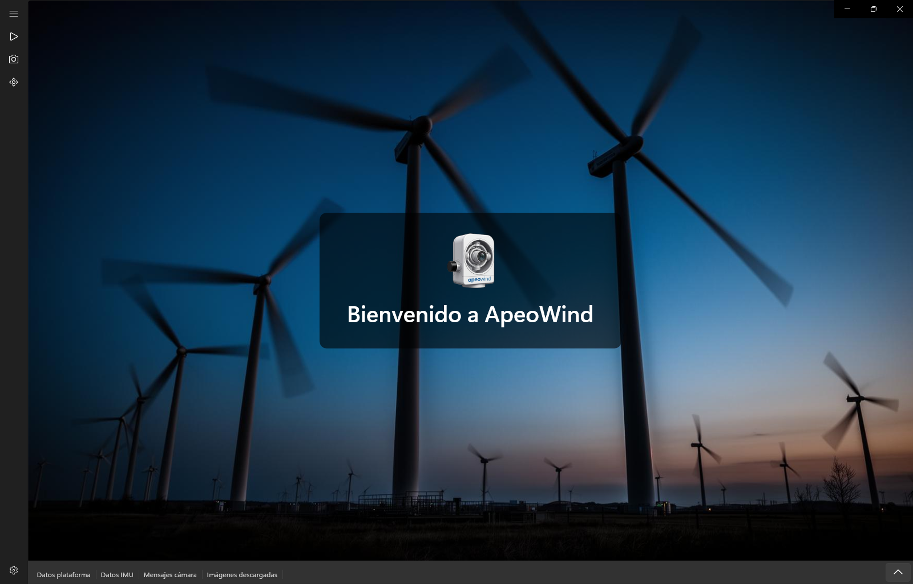
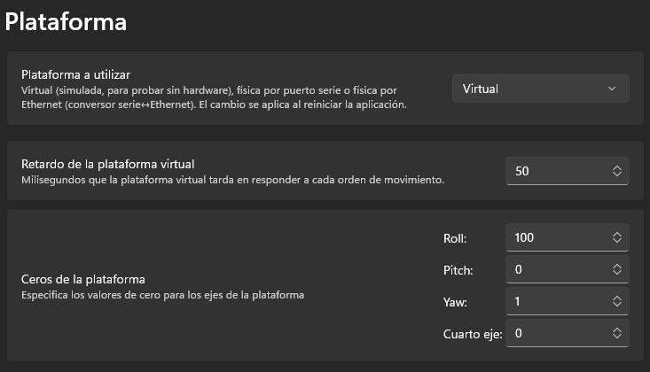
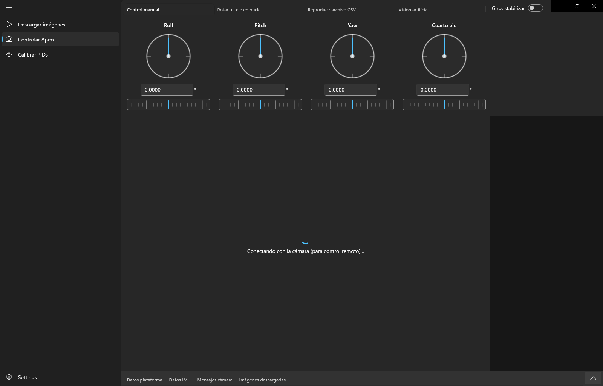
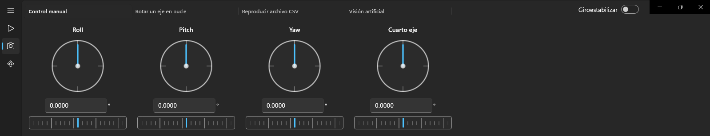
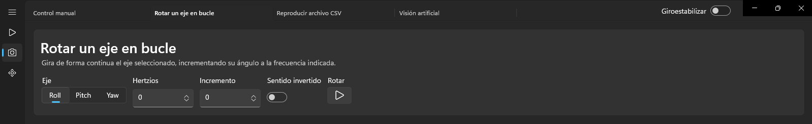
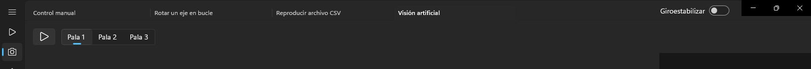
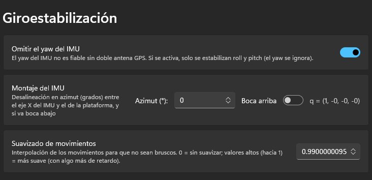
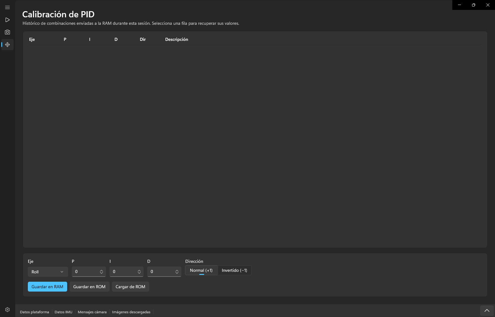

ApeoWind controla una plataforma giroestabilizada de tres ejes con una
cámara Sony ILX‑LR1. Estabiliza la imagen frente a las vibraciones del vehículo usando
una unidad inercial (IMU), permite mover la plataforma a mano o de forma automática,
reproducir trayectorias grabadas, calibrar el control de los motores (PIDs) y gestionar la
cámara y la descarga de las fotos.
¿Para quién es este manual? Para el operador de la plataforma. Los conceptos
técnicos (giroestabilización, PIDs, cuaterniones) se explican en lenguaje llano en cada
sección y se resumen en el glosario.

Pantalla de inicio: «Bienvenido a ApeoWind».
Las tres zonas de la ventana
Menú lateral (izquierda): las tres áreas principales —
Descargar imágenes, Controlar Apeo y Calibrar PIDs — más el
acceso a Ajustes.
Zona central: la página activa.
Paneles inferiores: cuatro pestañas siempre visibles —
Datos plataforma, Datos IMU, Mensajes cámara e
Imágenes descargadas — y una banda de avisos.
¿Qué es APEO?
APEO inspecciona de forma remota las palas de los aerogeneradores en operación,
capturando su comportamiento geométrico y estructural real sin necesidad de parar la
turbina, e información que antes era imposible de obtener.
El equipo se monta sobre una plataforma giroestabilizada y ApeoWind es la
aplicación que lo gobierna: estabiliza la plataforma, sigue las palas y maneja la cámara para
obtener imágenes nítidas pese al movimiento del vehículo y a la rotación de la turbina.
Cómo funciona
Integración: el equipo se monta en la plataforma —vehículo, dron o barco— y
se despliega en minutos, sin parar la turbina.
Seguimiento autónomo de palas: detecta y sigue cada pala en tiempo real,
adaptándose al viento y a la velocidad de rotación.
Captura y análisis: registra imágenes de alta resolución con la pala en
movimiento, para su posterior análisis.
Qué permite detectar
La inspección visual busca, entre otros:
Suciedad y acumulaciones
Desgaste y degradación superficial
Impactos de aves
Presencia de hielo
Estado del pararrayos
Grietas y defectos de superficie
Alcance de esta aplicación. ApeoWind controla la plataforma
giroestabilizada, la cámara Sony ILX‑LR1 y el seguimiento de
palas (visión artificial). El sistema APEO completo puede integrar además otras
tecnologías (telemetría LiDAR, imagen térmica o generación de modelos 3D) que no forman parte de
esta interfaz.
Primeros pasos
La primera vez, configura las conexiones en Ajustes antes de operar:
Elige el modo de la plataforma (Virtual, Serie o Ethernet) y su endpoint.
Elige el modo del IMU y su endpoint.
Si vas a usar la cámara, configura su nombre, IP y MAC.
Comprueba la banda de avisos: si todo está en verde (sin avisos
rojos), estás listo.
Ve a Controlar Apeo para empezar a operar.
El cambio de modo de conexión de la plataforma o del IMU (Virtual ↔ Serie ↔
Ethernet) se aplica al reiniciar la aplicación. El resto de ajustes se
aplican al momento.
¿Sin hardware a mano? Usa el modo Virtual para la plataforma y el
IMU. Podrás familiarizarte con la interfaz, e incluso fijar a mano la actitud del IMU virtual
para ver cómo responde la giroestabilización.
Conexión de plataforma e IMU
Tanto la plataforma como el IMU (VectorNav VN‑100) pueden conectarse de tres formas. Se
eligen de forma independiente en Ajustes.
🧪
Virtual
Dispositivo simulado, sin hardware. La plataforma virtual responde con un retardo
configurable; el IMU virtual emite la actitud (roll/pitch/yaw) que fijes a mano.
🔌
Física (puerto serie)
Por cable USB/COM. Requiere seleccionar el puerto y ajustar sus parámetros para recibir
datos a 200 Hz (ver aviso).
🌐
Física (Ethernet)
A través de un conversor serie↔Ethernet. Requiere la IP del conversor y el puerto
(por defecto 2525).
Configuración del puerto serie (importante)
Para que el flujo de datos llegue a 200 Hz sin atascos, ajusta el puerto COM en Windows:
Administrador de dispositivos → el puerto COM → Propiedades →
«Configuración del puerto» → «Opciones avanzadas»:
Recepción (Bytes) = 64
Transmisión (Bytes) = 64
Temporizador de latencia (mseg) = 1
Reconexión automática
En los modos físicos, si se pierde la conexión la aplicación reintenta cada cierto tiempo
(configurable en «Tiempo para intentar reconectar con la plataforma»). No hace falta
reiniciar.

Ajustes: selección de modo y endpoint de la plataforma.
Controlar Apeo
Es el centro de operaciones. Arriba, el interruptor «Giroestabilizar»
activa o desactiva la estabilización. Debajo, cuatro pestañas para mover la plataforma de
distintas formas, y en la parte inferior el panel de la cámara Sony.
Giroestabilizar y control manual conviven con cuidado. Con la
giroestabilización activa, la plataforma compensa el movimiento del vehículo de forma
automática. El control manual y los modos automáticos suman su consigna sobre esa
estabilización.

Página «Controlar Apeo»: interruptor Giroestabilizar y pestañas de control.
Control manual
Cuatro mandos circulares, uno por eje: Roll, Pitch,
Yaw y Cuarto eje. Cada mando (un
«dial‑vernier») combina ajuste grueso y fino:
Elemento
Con el ratón
Con las flechas del teclado
Aro exterior (grueso)
Clic y arrastrar
← → = ±1° · ↑ ↓ = ±10°
Campo decimal
Escribir el ángulo (decimal con coma)
← → = ±0,001°
Vernier (fino)
Arrastrar o rueda del ratón
← → = ±0,0001° · ↑ ↓ = ±0,001°
Los valores se ajustan al rango [−180°, 180°].

«Control manual»: un dial‑vernier por cada eje.
Rotar un eje en bucle
Gira de forma continua el eje elegido, incrementando su ángulo a la frecuencia indicada.
Elige el Eje (Roll / Pitch / Yaw).
Fija los Hertzios (frecuencia) y el Incremento (cuánto avanza cada ciclo).
Activa «Sentido invertido» si quieres girar al revés.
Pulsa «Rotar» para arrancar o detener.
Mientras rota, el selector de eje se bloquea para evitar saltos bruscos.

«Rotar un eje en bucle».
Reproducir archivo CSV
Reproduce sobre la plataforma una secuencia de posiciones grabada en un archivo CSV.
Elige un archivo reciente en el desplegable «Archivo» o pulsa «Buscar…».
Abre «Configuración de reproducción» para ajustar:
Qué ejes se reproducen: Roll, Pitch, Yaw, Cuarto eje.
Bucle: repetir al terminar.
Aleatoriedad por eje: añade una variación aleatoria.
Incremento por eje: añade un desfase constante.
Pulsa ▶ para reproducir y ⏸ para pausar.
«Guardar CSV» guarda las posiciones recibidas de la plataforma como un archivo nuevo.
Formato del archivo CSV
El archivo es texto plano:
La primera línea es un número: el tiempo entre muestras (en milisegundos).
Cada línea siguiente tiene 8 campos separados por «;». Los cuatro
primeros son Roll;Pitch;Yaw;CuartoEje (en grados, con el punto como
separador decimal); el resto se ignoran.
Las líneas que no tengan exactamente 8 campos se descartan.
Pulsa el botón ▶ para iniciar o detener la recepción.
Selecciona la Pala a vigilar (Pala 1 / 2 / 3).

«Visión artificial»: arranque y selección de pala.
Cámara Sony ILX‑LR1
La plataforma monta una Sony ILX‑LR1, una cámara industrial full‑frame de
lente intercambiable sin visor ni controles físicos: está pensada para
manejarse en remoto. ApeoWind la controla a través del Sony Camera Remote SDK,
que da acceso al disparo, el enfoque, el vídeo en directo y todos los ajustes desde la
aplicación.
Característica
Especificación
Tipo
Cámara industrial de lente intercambiable (uso en dron/UAV e industrial remoto)
Batería o entrada de corriente continua para operación prolongada
Peso
≈ 243 g (cuerpo)
Dimensiones
≈ 100 × 74 × 42,5 mm
Al no tener pantalla ni botones, todo se hace desde ApeoWind: encuadrar con
el vídeo en directo y la retícula, enfocar, disparar y ajustar la exposición. Configura su
conexión (nombre, IP y MAC) en Ajustes → Cámara.
Vídeo en directo y ajustes en la aplicación
En la parte inferior de «Controlar Apeo» se ve el vídeo en directo de la
cámara, con la retícula y los recuadros de enfoque superpuestos. El panel lateral derecho
agrupa todos los ajustes.
Vista y encuadre
Streaming: interruptor para activar/desactivar la vista en directo.
Zoom de enfoque: amplía la imagen para confirmar el enfoque manual.
Retícula y color: tipo de retícula y su color (con transparencia) para ayudar a encuadrar.
Disparo
«Enfocar»: fija el enfoque (equivalente a mantener el disparador a medio recorrido).
«Seguir enfocando tras foto»: mantiene el enfoque activo después de disparar.
«Milisegundos enfoque» y «Milisegundos tras hacer foto»: tiempos de la secuencia de disparo.
«Hacer foto»: dispara. El contador «Fotos realizadas» lleva la cuenta.
Ajustes de la cámara
Las opciones disponibles dependen del modo de la cámara. Agrupadas en:
Secundarias: Formato, Tipo de archivo RAW, Calidad JPEG, Tamaño de la
imagen, Ratio de aspecto, Modo de disparo, Balance de blancos, Optimizador de rango
dinámico, Área de enfoque, Modo de medición, Modo de enfoque, Destino de guardado,
Directorio destino y Tamaño de imagen de guardado en PC.
Panel de la cámara: vídeo en directo y ajustes laterales.
Giroestabilización
Es lo que mantiene la cámara apuntando estable mientras el vehículo se mueve. Un
IMU (VectorNav VN‑100) montado en la base mide la inclinación del vehículo,
y la plataforma corrige en sentido contrario para cancelarla.
El montaje
IMU: atornillado a la base del vehículo (debajo de la plataforma). Mide la actitud del vehículo.
Plataforma: el cardán de tres ejes (Yaw → Pitch → Roll) que se mueve por encima.
Cámara: sobre la plataforma; hereda la estabilización.
Cómo se activa
Con el interruptor «Giroestabilizar» en la página «Controlar Apeo». Mientras
está activo, la plataforma compensa automáticamente el cabeceo y balanceo del vehículo.
Ajustes que debes conocer
Montaje del IMU — Azimut
Desalineación en grados entre el eje X del IMU y el «delante» de la plataforma. Si el IMU
está girado respecto a la plataforma, este valor lo compensa.
Montaje del IMU — Boca abajo / Boca arriba
Indica si el IMU está montado invertido. Junto al azimut, define la orientación del IMU
respecto a la plataforma (se muestra el cuaternión calculado).
Omitir el yaw del IMU
El yaw (rumbo) del IMU no es fiable sin doble antena GPS. Si lo activas, solo se
estabilizan roll y pitch; las rotaciones de rumbo del vehículo no se
corrigen.
Suavizado de movimientos
Interpola los movimientos para que no sean bruscos. 0 = sin suavizar
(instantáneo, más rígido); valores hacia 1 = más suave, con algo más de
retardo.
El sistema mantiene la orientación relativa a la que el IMU vio al arrancar: no
necesita calibrar el norte. El roll y el pitch se anclan a la gravedad (referencia absoluta).
Para el fundamento matemático completo (cuaterniones, SLERP, calibración) consulta
docs/Giroestabilizacion.md.

Ajustes de giroestabilización: omitir yaw, montaje y suavizado.
Calibrar PIDs
Los PID determinan cómo de enérgicamente responde cada eje a una orden de
movimiento. Se ajustan por eje hasta que el comportamiento sea estable (sin oscilar ni
responder demasiado lento).
Parámetro
Qué hace
P (Proporcional)
Responde al error actual. Más P = respuesta más enérgica.
I (Integral)
Corrige el error acumulado (elimina el desvío permanente).
D (Derivativo)
Amortigua según la velocidad de cambio (evita el sobrepaso).
Dir (Dirección)
Sentido del motor: Normal (+1) o Invertido (−1).
Flujo de trabajo
Elige el Eje (Roll / Pitch / Yaw / Cuarto eje).
Ajusta P, I, D y Dirección.
«Guardar en RAM»: envía los valores a la plataforma para probarlos en vivo (no permanentes).
Anota cómo se comportó en la columna «Descripción» del histórico.
Repite hasta dar con la combinación adecuada.
«Guardar en ROM»: graba en la memoria permanente de la plataforma (sobrevive al apagado).
«Cargar de ROM»: recupera los valores guardados en la plataforma.
El histórico de la sesión registra cada combinación enviada a la RAM. Haz
clic en una fila para recuperar sus valores en el editor y compararlos.
«Guardar en RAM» es temporal y sirve para probar; «Guardar en ROM» es permanente. Graba en
ROM solo cuando estés conforme con el comportamiento.

«Calibración de PID»: histórico de la sesión y editor por eje.
Descargar imágenes
Transfiere al PC las fotos almacenadas en la tarjeta de la cámara. Al entrar, la aplicación
se conecta a la cámara para la transferencia de archivos
(«Conectando con la cámara…»).
Navega por las carpetas de la tarjeta en el árbol de la izquierda.
Revisa las miniaturas a la derecha.
Selecciona las imágenes y descárgalas al PC.
Las imágenes descargadas aparecen también en la pestaña inferior «Imágenes
descargadas».
«Descargar imágenes»: árbol de carpetas y miniaturas.
Ajustes
Referencia completa de la configuración, agrupada como aparece en la aplicación.
Apariencia
Tema
Sistema / Claro / Oscuro.
Plataforma
Plataforma a utilizar
Virtual / Física (puerto serie) / Física (Ethernet). Se aplica al reiniciar.
Puerto serie (plataforma)
Puerto COM (con botón de refresco). Solo en modo serie.
Conexión Ethernet (plataforma)
IP y puerto (por defecto 2525). Solo en modo Ethernet.
Retardo de la plataforma virtual
Milisegundos de respuesta simulada (por defecto 50). Solo en modo virtual.
Tiempo para intentar reconectar con la plataforma
Segundos entre reintentos de conexión. Solo en modos físicos.
Ceros de la plataforma
Offset de Roll / Pitch / Yaw / Cuarto eje para fijar el origen de cada eje.
IMU
IMU a utilizar
Virtual / Físico (puerto serie) / Físico (Ethernet). Se aplica al reiniciar.
Puerto serie (IMU)
Puerto COM del VN‑100 (con refresco). Solo en modo serie.
Conexión Ethernet (IMU)
IP y puerto (por defecto 2525). Solo en modo Ethernet.
Actitud del IMU virtual
Roll / Pitch / Yaw que emite el IMU simulado. Se aplica en vivo.